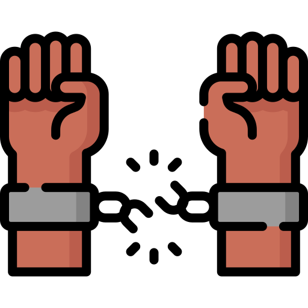

Different Factors against Happiness Scores
Click on each icons below to find a different relation between the Happiness Score and each Factors.

The more richer the country, the more happier!
According to the following bubble plot below, it can be seen that there is a
high correlation between Happiness Score and Economy.
As a result, it can be concluded that more richer countries tend to be happier in comparison to poorer countries.
You can use the year scroll at the bottom of the bubble plot to observe the data between the years 2021, 2022 and 2023 . You can also use the dropdown box or click the certain continent to view only the bubble from that continent.
The better the Family (Social Support), the more happier!
According to the following bubble plot below, it can be seen that there is a
moderate correlation between Happiness Score and Family.
As a result, it can be concluded that the more social support the countries have, the more likely they are to be happier in comparison to the countries have less social support.
You can use the year scroll at the bottom of the bubble plot to observe the data between the years 2021, 2022 and 2023 . You can also use the dropdown box or click the certain continent to view only the bubble from that continent.
Freedom makes people happy!
According to the following bubble plot below, it can be seen that there is a
moderate correlation between Happiness Score and Freedom.
As a result, it can be concluded that the more freedom the countries have, the more likely they are to be happier in comparison to the countries have less freedom.
You can use the year scroll at the bottom of the bubble plot to observe the data between the years 2021, 2022 and 2023 . You can also use the dropdown box or click the certain continent to view only the bubble from that continent.
Being generous won't make you happy!
According to the following bubble plot below, it can be seen that there is a
low correlation between Happiness Score and Generosity.
Therefore, regardless of being generous or not generous it won't affect the happiness score .
You can use the year scroll at the bottom of the bubble plot to observe the data between the years 2021, 2022 and 2023 . You can also use the dropdown box or click the certain continent to view only the bubble from that continent.
Healthy people will live longer!
According to the following bubble plot below, it can be seen that there is a
high correlation between Happiness Score and Health (Life Expectancy).
As a result, it can be concluded that the greater the life expectancy of the countries, the more likely they are to be happier in comparison to the countries that have bad health.
You can use the year scroll at the bottom of the bubble plot to observe the data between the years 2021, 2022 and 2023 . You can also use the dropdown box or click the certain continent to view only the bubble from that continent.
Corruption rarely exist!
According to the following bubble plot below, it can be seen that there is a
mild correlation between Happiness Score and Trust (Government Corruption).
Most countries are free from corruption regardless of being sad or happy. However, it can be seen that European countries
which have high happiness scores also have high corruption.
You can use the year scroll at the bottom of the bubble plot to observe the data between the years 2021, 2022 and 2023 . You can also use the dropdown box or click the certain continent to view only the bubble from that continent.